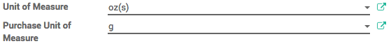
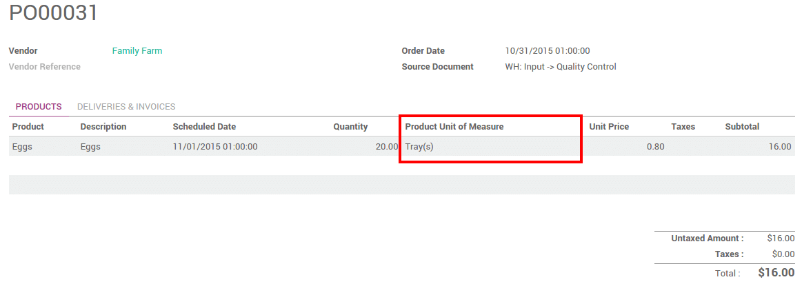
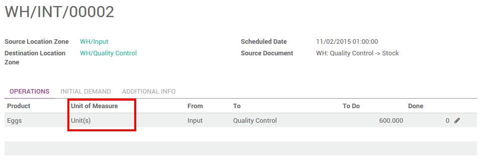
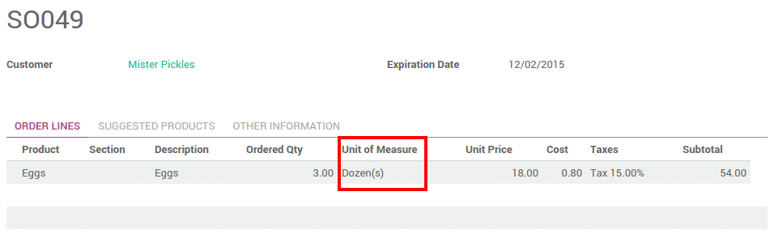

Overview
In some cases, handling products in different unit of measures is necessary. For example, if you buy products in a country where the metric system is of application and sell the in a country where the imperial system is used, you will need to convert the units.
You can set up Odoo to work with different units of measure for one product.
Конфигурация
In the Inventory application, go to . In the Products section, select Some products may be sold/purchased in different units of measure (advanced), then click on Apply.

Setting up units on your products
In , open the product which you would like to change the purchase/sale unit of measure, and click on Edit.
In the Unit of Measure section, select the unit in which the product will be sold and in which internal transfers will be done.
In the Purchase Unit of Measure section, select the unit in which you purchase the product. When you're done, click on Save.
Совет
Click on the edit button to create new unit of measures.
Transfer from one unit to another
When doing inter-unit transfers, the rounding is automatically done by Odoo.
The unit of measure can be changed throughout the whole process. The only condition is that the unit of measure is part of the same category.
In this example, we are in the egg business :
- We buy eggs by trays (30 eggs)
- We check all eggs individually when receiving it (quality control)
- We sell eggs by the dozen to the customers

Примечание
The Sale price is expressed in the Product unit of measure. The Cost price is expressed in the Purchase Unit of Measure.
Примечание
All internal transfers are expressed in the Product Unit of Measure.
Procurement
When doing your procurement request, you can still change the unit of measure.

The unit of measure can also be changed in the purchase order :
Контроль качества
The quality control is done by unit.
The basic unit of measure of our product is Unit. Therefore the quality check is done by unit.
Примечание
The unit of measure can only be changed when the transfer status is Draft.
Delivery process
The eggs are sold by the dozen. You can choose the unit of measure on the sale order document. When doing it, the price is automatically computed from the unit to the dozen.
In the delivery order, the initial demand is done in the sales order unit of measure :

But the transfer is done in the product unit of measure. Everything is converted automatically :